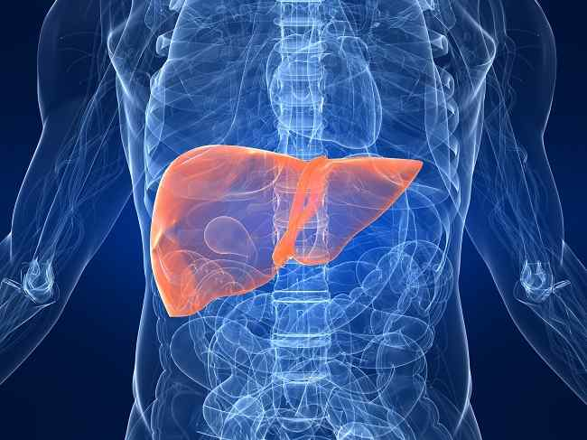

KANKER HATI
Penderita kanker hati umumnya adalah lansia. Kanker hati primer adalah kanker yang berawal di organ hati dan termasuk jenis kanker yang berpotensi fatal. Selain kanker hati primer yang muncul di dalam hati, ada juga yang dikenal dengan kanker hati sekunder yang bermula di bagian tubuh lain, seperti usus, sebelum menyebar ke hati.
Kanker hati adalah tipe kanker paling umum kelima di antara laki-laki dan ketujuh di antara wanita. Sekitar 85% kasus kanker hati di dunia terjadi di negara-negara yang masih berkembang. Penyebab tingginya kasus kanker hati di negara-negara yang masih berkembang adalah tingginya kasus hepatitis B dan C di negara-negara tersebut, termasuk di Indonesia.

Sebanyak 59% kasus kanker hati di negara yang masih berkembang disebabkan oleh hepatitis B dan 33% oleh hepatitis C. Sedangkan di negara-negara yang sudah maju seperti negara-negara di Eropa, penyebab utama kanker hati adalah konsumsi alkohol yang tinggi dan obesitas yang meningkat.
Di Indonesia, diperkirakan terdapat sekitar 33.000 kasus baru kanker hati setiap tahunnya. Angka ini diperkirakan akan meningkat seiring dengan bertambahnya jumlah penderita hepatitis B dan C yang saat ini mencapai 30 juta jiwa.
Dengan ratusan fungsi yang dijalankan, hati menjadi salah satu organ yang paling kompleks dalam tubuh manusia. Kanker hati dikategorikan sebagai penyakit serius akibat terhambatnya fungsi-fungsi hati tersebut, bahkan benar-benar menghentikannya. Berikut ini adalah beberapa fungsi terpenting dari hati:
Gejala penyakit ini biasanya berbentuk umum atau kurang spesifik seperti misalnya kelelahan dan mual. Banyak orang yang baru merasakan gejala secara jelas setelah kanker mencapai stadium lanjut. Gejala kanker hati meliputi:
Penyebab pasti kanker hati masih belum diketahui, tetapi penyakit ini diperkirakan berkaitan dengan kerusakan jaringan sel-sel hati, seperti penyakit hati sirosis. Penyakit sirosis dapat disebabkan oleh:
Diagnosis Kanker Hati Sedini Mungkin
Jika dokter umum mencurigai atau mendiagnosis Anda telah terkena kanker hati, Anda akan dirujuk ke rumah sakit spesialis untuk pemeriksaan lebih lanjut. Semakin cepat penyakit ini terdiagnosis, semakin efektif penanganan yang diberikan.
Pada kenyataannya hanya 1 dari 5 orang yang dapat bertahan hidup, setidaknya setahun setelah didiagnosis mengidap kanker hati. Dan hanya 1 dari 20 pengidap yang dapat bertahan hidup setidaknya lima tahun. Hal ini dikarenakan sebanyak 9 dari 10 penderita baru didiagnosis ketika kanker sudah ada pada stadium lanjut. Pada kebanyakan pengidap, kanker telah berkembang terlalu parah untuk disembuhkan.
Maka agar kanker hati dapat terdiagnosis lebih dini, orang-orang yang berisiko tinggi mengidap penyakit tersebut disarankan untuk memeriksakan diri secara rutin dan teratur. Kelompok orang yang berisiko tinggi ini adalah mereka yang positif terinfeksi hepatitis C atau yang pernah mengidap sirosis. Manfaat dari pemeriksaan rutin adalah untuk mendiagnosis kanker hati pada stadium awal, yaitu saat pengobatan untuk kepulihan total lebih memungkinkan.
Stadium kanker menentukan jenis penanganan apa yang akan diberikan pada penderita. Jika kanker yang terdiagnosis sudah terlanjur pada kondisi stadium lanjut, perawatan hanya ditujukan untuk mengurangi rasa sakit dan ketidaknyamanan pasien selama sisa hidupnya. Tapi lain halnya jika kanker bisa terdiagnosis sebelum berkembang lebih parah, maka kondisi tersebut lebih memungkinkan untuk ditangani.
Setidaknya ada tiga cara dalam mengobati kanker hati. Yang pertama adalah ablasi frekuensi radio, yaitu penggunaan sebuah perangkat listrik yang khusus digunakan untuk menghancurkan sel-sel kanker yang ada di organ hati. Kedua adalah operasi reseksi, yaitu proses pengangkatan bagian-bagian tertentu dari organ hati yang terinfeksi. Yang ketiga adalah transplantasi hati, yaitu mengganti organ hati penderita dengan organ hati dari pendonor.
Risiko kanker hati dapat dikurangi dengan menerapkan gaya hidup sehat seperti mengatur pola makan dan olahraga teratur agar tubuh terhindar dari obesitas, serta menghindari konsumsi minuman keras dan rokok.
Selain itu, Anda juga bisa menghindari risiko terinfeksi hepatitis B dan C dengan vaksinasi dan berhubungan seksual secara aman. Jika Anda ingin menindik atau menato tubuh, pastikan untuk melakukannya di tempat yang memiliki alat-alat dengan tingkat kesterilan yang terjamin.